API Reference¶
WorldCover¶
- shelterbelts.apis.worldcover.worldcover(lat=-34.389, lon=148.469, buffer=0.01, outdir='.', stub='TEST', save_tif=True, plot=True)¶
Download ESA WorldCover imagery from the Microsoft Planetary Computer API.
- Parameters:
lat (float, optional) – Latitude in WGS 84 (EPSG:4326). Default is -34.389.
lon (float, optional) – Longitude in WGS 84 (EPSG:4326). Default is 148.469.
buffer (float, optional) – Distance in degrees in a single direction (0.01 ≈ 1 km), resulting in an approximately square area of size 2*buffer. Default is 0.01.
outdir (str, optional) – Output directory for saving results. Default is current directory.
stub (str, optional) – Prefix for output filenames. Default is “TEST”.
save_tif (bool, optional) – Whether to save the results as a GeoTIFF. Default is True.
plot (bool, optional) – Whether to generate a PNG visualisation. Default is True.
- Returns:
Dataset with variable worldcover (integer codes) and latitude/longitude coordinates. The mapping of codes to classes is provided in
worldcover_labels.- Return type:
xarray.Dataset
Notes
When
save_tif=True, it writes:{stub}_worldcover.tifWhen
plot=True, it writes:{stub}_worldcover.pngExamples
Download a small tile without saving files:
>>> ds = worldcover(buffer=0.01, save_tif=False, plot=False) Starting worldcover.py >>> 'worldcover' in ds.data_vars True
Visualising the WorldCover output:
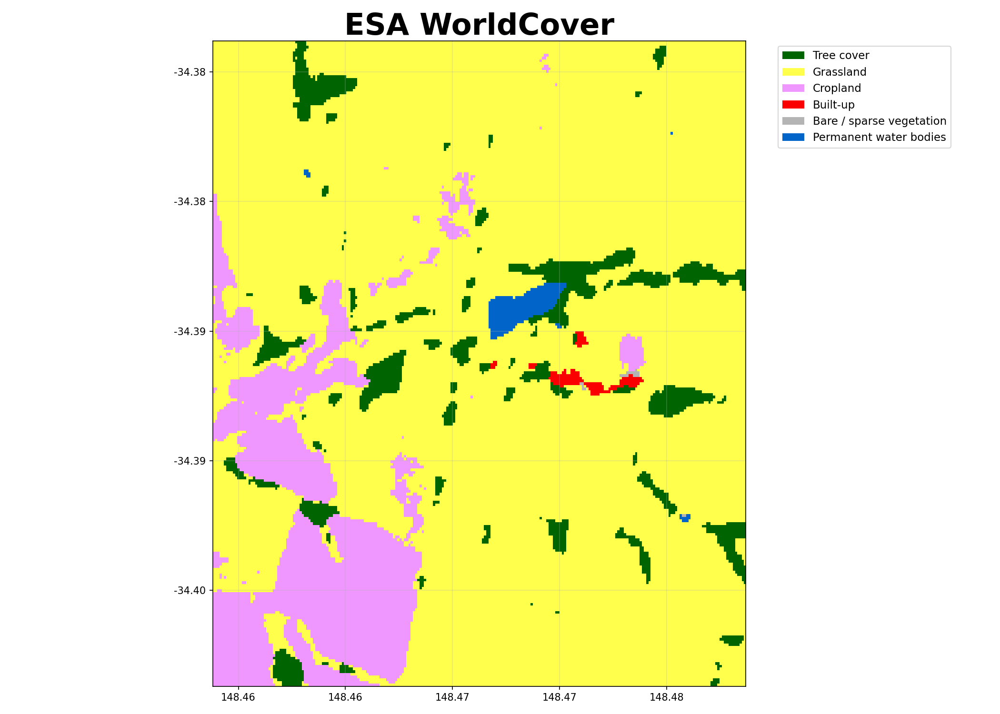
BARRA Daily¶
- shelterbelts.apis.barra_daily.barra_daily(variables=['uas', 'vas'], lat=-34.389, lon=148.469, buffer=0.01, start_year='2020', end_year='2021', outdir='.', stub='TEST', save_netcdf=True, plot=True, gdata=False, temporal='day')¶
Download 8day variables from BARRA at 4.4km resolution for the region and time of interest
- Parameters:
variables (list of str, optional) – Default is [“uas”, “vas”] for Eastward and Northward Near-Surface Wind, respectively. See links at the top of this file for more details.
lat (float, optional) – Latitude in WGS 84 (EPSG:4326). Default is -34.389.
lon (float, optional) – Longitude in WGS 84 (EPSG:4326). Default is 148.469.
buffer (float, optional) – – Note: Buffer option is currently disabled due to a bug in the API, so we just get the nearest point.
start_year (str, optional) – Start year (inclusive). The minimum available year is 1889. Default is “2020”.
end_year (str, optional) – End year (inclusive). Data beyond the available range will be capped at the most recent available date. Default is “2021”.
outdir (str, optional) – Output directory for saving results. Default is the current directory.
stub (str, optional) – Prefix for output filenames. Default is “TEST”.
save_netcdf (bool, optional) – Whether to save results as a NetCDF file. Default is True.
plot (bool, optional) – Whether to generate a wind rose visualisation (PNG). Default is True.
gdata (bool, optional) – Whether to access data via NCI /g/data/xe2 path (requires NCI access). If False, uses public THREDDS server. Default is False.
temporal (str, optional) – Temporal resolution of the data. Options are ‘20min’, ‘1hr’, ‘day’, ‘mon’. Default is ‘day’.
- Returns:
Dataset containing the requested variables with dimensions for time, latitude, and longitude.
- Return type:
xarray.Dataset
Notes
When
save_netcdf=True, it writes:{stub}_barra_daily.ncWhen
plot=True, it writes:{stub}_barra_daily.png(a wind rose visualisation)Examples
Download wind data with default parameters:
>>> ds = barra_daily(save_netcdf=False, plot=False) >>> 'uas' in ds.data_vars and 'vas' in ds.data_vars # Eastward and northward wind speed True
Visualising the wind rose:
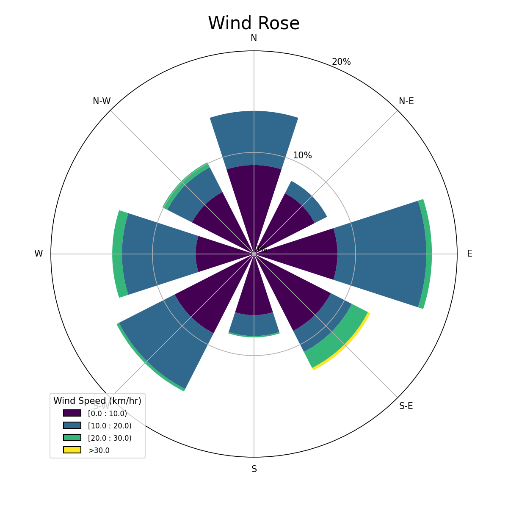
Canopy Height¶
- shelterbelts.apis.canopy_height.canopy_height(lat=-34.389, lon=148.469, buffer=0.005, outdir='.', stub='Test', tmpdir='.', save_tif=True, plot=True)¶
Download and create a merged canopy height raster from the Meta/Tolan dataset.
- Parameters:
lat (float, optional) – Latitude in WGS 84 (EPSG:4326). Default is -34.389.
lon (float, optional) – Longitude in WGS 84 (EPSG:4326). Default is 148.469.
buffer (float, optional) – Distance in degrees in a single direction. e.g. 0.01 degrees is ~1km so a buffer of 0.01 gives an approx 2km x 2km area. Default is 0.005.
outdir (str, optional) – Output directory for saving results. Default is current directory.
stub (str, optional) – Prefix for output filenames. Default is
"Test".tmpdir (str, optional) – Directory to cache downloaded tiles. Default is the current directory.
save_tif (bool, optional) – Whether to save the results as a GeoTIFF. Default is True.
plot (bool, optional) – Whether to generate a PNG visualisation. Default is True.
- Returns:
Dataset with coordinates (latitude, longitude) and variable (canopy_height) of type int in metres.
- Return type:
xarray.Dataset
Notes
When
save_tif=True, it writes:{stub}_canopy_height.tifWhen
plot=True, it writes:{stub}_canopy_height.pngExample Visualisation¶
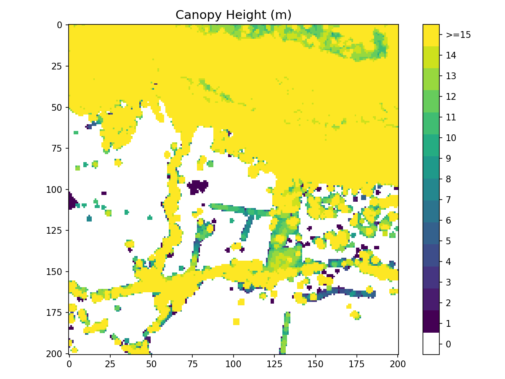
Indices¶
Tree Categories¶
- shelterbelts.indices.tree_categories.tree_categories(input_data, outdir='.', stub=None, min_patch_size=20, min_core_size=1000, edge_size=3, max_gap_size=1, strict_core_area=True, save_tif=True, plot=True)¶
Classifies a boolean woody vegetation map into four categories based on the Fragstats landscape ecology approach:
Scattered Trees (11): Individual trees or clusters below minimum patch size
Patch Core (12): Interior areas of tree patches with buffer from edges
Patch Edge (13): Perimeter areas of tree patches within edge distance
Other Trees (14): Corridor pixels connecting patches
- Parameters:
input_data (str or xarray.Dataset) – Either a file path to a binary GeoTIFF containing tree/no-tree information, or an xarray Dataset with a ‘woody_veg’ band (boolean or integer).
outdir (str, optional) – Output directory for saving results. Default is current directory.
stub (str, optional) – Prefix for output filenames. If input_data is a string and stub is not provided, it is derived from the input filename. Required when input_data is a Dataset.
min_patch_size (int, optional) – Minimum area (pixels) to classify as a patch rather than scattered trees. Default is 20.
min_core_size (int, optional) – Minimum area (pixels) to classify as a core area. Default is 1000.
edge_size (int, optional) – Distance (pixels) defining the edge region around patch cores. Default is 3.
max_gap_size (int, optional) – Maximum gap (pixels) to bridge when connecting tree clusters. Default is 1.
strict_core_area (bool, optional) – If True, enforce that core areas exceed the edge_size at all points. If False, use dilation and erosion to allow some irregularity. Default is True.
save_tif (bool, optional) – Whether to save the results as a GeoTIFF. Default is True.
plot (bool, optional) – Whether to generate a PNG visualisation. Default is True.
- Returns:
Dataset containing:
woody_veg: Original binary tree/no-tree classification
tree_categories: Categorised tree types (values 0, 11, 12, 13, 14)
- Return type:
xarray.Dataset
Notes
When save_tif=True, it outputs a GeoTIFF file with embedded color map:
{stub}_tree_categories.tifWhen plot=True, it outputs a PNG visualisation with legend:
{stub}_tree_categories.pngReferences
McGarigal, K., & Marks, B. J. (1995). FRAGSTATS: Spatial Pattern Analysis Program for Quantifying Landscape Structure. General Technical Report.
Examples
Using a file path as input:
>>> from shelterbelts.utils.filepaths import get_filename >>> filename_string = get_filename('g2_26729_binary_tree_cover_10m.tiff') >>> ds_cat = tree_categories(filename_string, plot=False, save_tif=False) >>> set(ds_cat.data_vars) == {'woody_veg', 'tree_categories'} True
Using a Dataset as input:
>>> from shelterbelts.utils.filepaths import create_test_woody_veg_dataset >>> ds_input = create_test_woody_veg_dataset() >>> ds_cat = tree_categories(ds_input, stub="TEST", plot=False, save_tif=False) >>> set(ds_cat.data_vars) == {'woody_veg', 'tree_categories'} True
Here’s how different parameters affect the categorization:
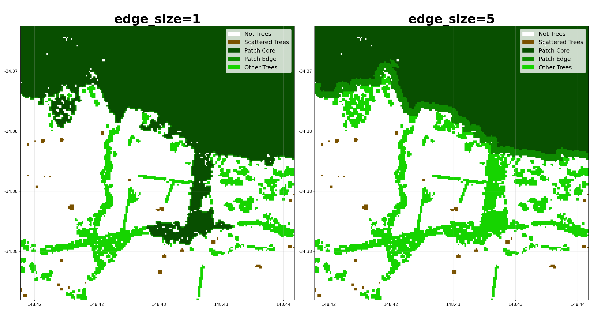
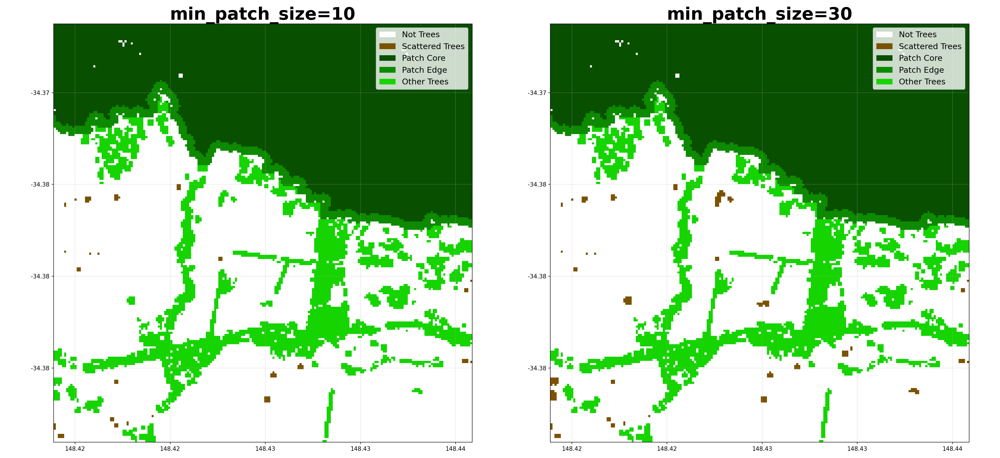
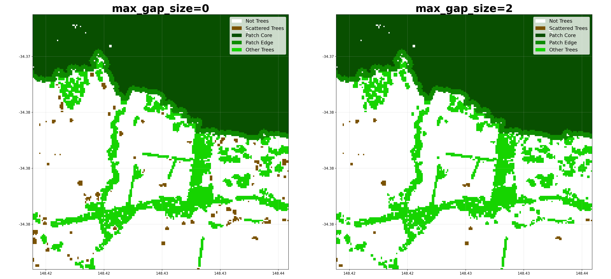
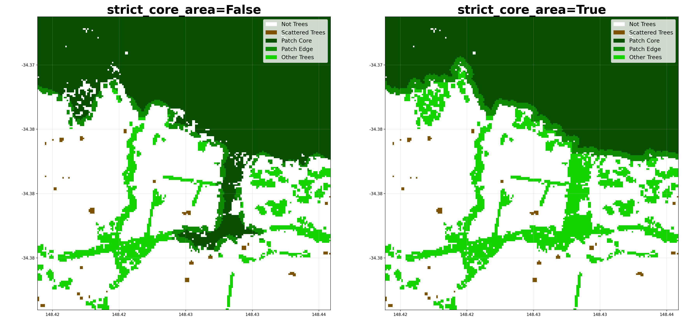
Shelter Categories¶
- shelterbelts.indices.shelter_categories.shelter_categories(category_data, wind_data=None, height_tif=None, outdir='.', stub='TEST', wind_method='WINDWARD', wind_threshold=20, distance_threshold=20, density_threshold=5, savetif=True, plot=True, crop_pixels=None)¶
Define sheltered and unsheltered pixels
Unsheltered (0): Pixels not protected from wind or without sufficient tree cover
Sheltered (2): Pixels within sheltering distance of trees or with sufficient tree cover
- Parameters:
category_data (str or xarray.Dataset) – Integer tif file generated by tree_categories.py, or a Dataset containing the ‘tree_categories’ band.
wind_data (str or xarray.Dataset, optional) – NetCDF with eastward and northward wind speed generated by barra_daily.py. If not provided, then sheltered/unsheltered is defined by nearby tree density rather than distance from trees.
height_tif (str, optional) – Integer tif file generated by canopy_height.py. If not provided, then sheltered/unsheltered is defined by distance in pixels rather than tree heights.
outdir (str, optional) – Output directory for saving results. Default is current directory.
stub (str, optional) – Prefix for output filenames. Default is ‘TEST’.
wind_method (str, optional) – Either ‘WINDWARD’, ‘MOST_COMMON’, ‘MAX’, ‘HAPPENED’ or ‘ANY’. Default is ‘WINDWARD’. MOST_COMMON assumes only downwind shelter, using the most common wind direction above the wind_threshold. WINDWARD assumes downwind shelter to distance_threshold, and upwind shelter to (distance_threshold / 2). MAX assumes shelter from the direction of maximum wind speed. HAPPENED refers to any direction where the winds exceeded the wind_threshold in the wind dataset. ANY refers to all 8 compass directions.
wind_threshold (int, optional) – Wind speed threshold in km/h. Default is 20.
distance_threshold (int, optional) – Distance from trees that counts as sheltered. Units are either ‘tree heights’ or ‘number of pixels’, depending on if a height_tif is provided. Default is 20.
density_threshold (int, optional) – Percentage tree cover within the distance_threshold that counts as sheltered. Only applies if the wind_data is not provided. Default is 5.
savetif (bool, optional) – Whether to save the results as a GeoTIFF. Default is True.
plot (bool, optional) – Whether to generate a PNG visualisation. Default is True.
crop_pixels (int, optional) – Number of pixels to crop from each edge of the output.
- Returns:
Dataset containing ‘shelter_categories’ band, where the integers represent the categories defined in ‘shelter_category_labels’.
- Return type:
xarray.Dataset
Notes
When savetif=True, it outputs a GeoTIFF file with embedded color map:
{stub}_shelter_categories.tifWhen plot=True, it outputs a PNG visualisation with legend:
{stub}_shelter_categories.pngExamples
Using a file path as input:
>>> from shelterbelts.utils.filepaths import get_filename >>> filename = get_filename('g2_26729_tree_categories.tif') >>> ds_shelter = shelter_categories(filename, outdir='/tmp', plot=False, savetif=False) >>> set(ds_shelter.data_vars) == {'tree_categories', 'shelter_categories'} # No woody_veg layer because we loaded the tree_categories.tif directly True
Using a Dataset as input:
>>> from shelterbelts.utils.filepaths import get_example_tree_categories_data >>> ds_cat = get_example_tree_categories_data() >>> ds_shelter = shelter_categories(ds_cat, outdir='/tmp', plot=False, savetif=False) >>> set(ds_shelter.data_vars) == {'woody_veg', 'tree_categories', 'shelter_categories'} # Includes woody_veg layer because the full pipeline was executed True
Here’s how different parameters affect the shelter categorization:
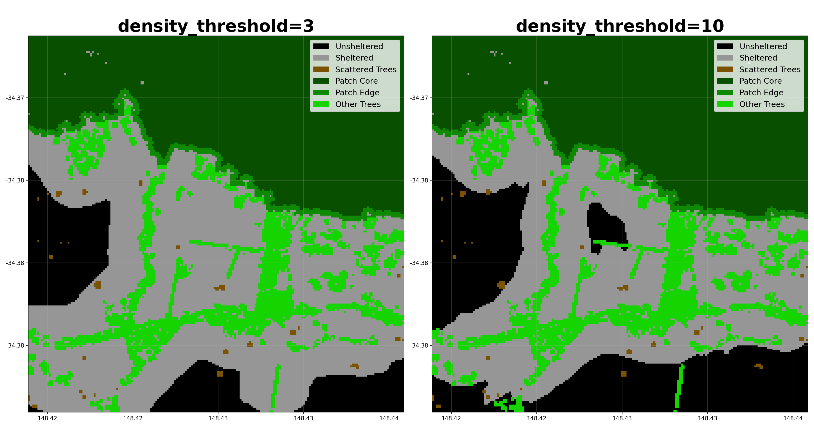
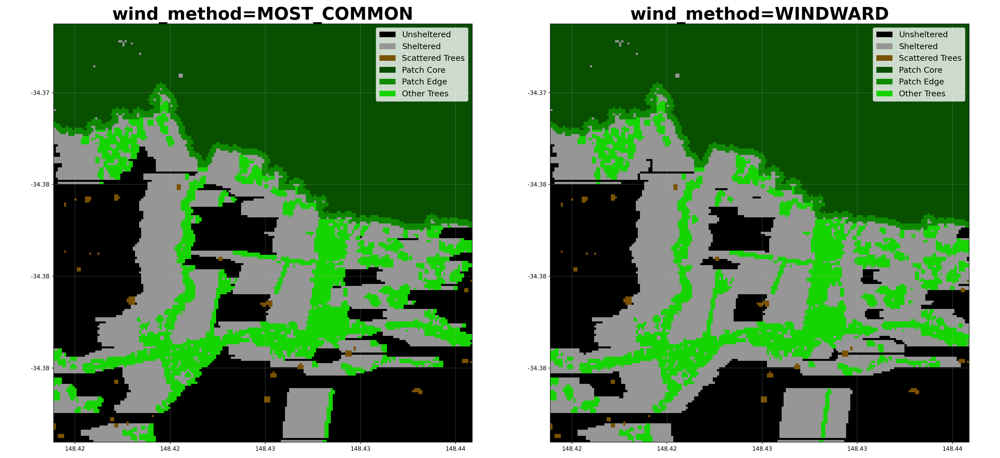
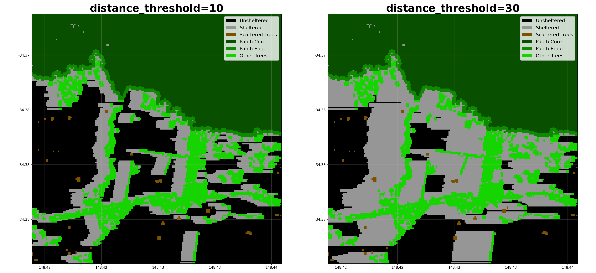
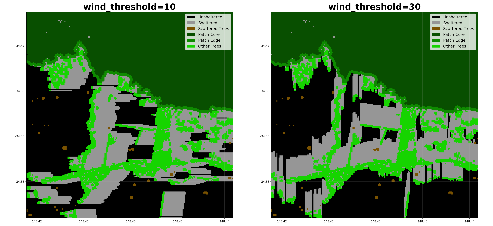
Cover Categories¶
- shelterbelts.indices.cover_categories.cover_categories(shelter_data, worldcover_data, outdir='.', stub='TEST', savetif=True, plot=True)¶
Reclassify non-tree pixels with categories from worldcover
- Parameters:
shelter_data (str, xarray.Dataset, or xarray.DataArray) – File path to integer tif generated by shelter_categories.py, or a Dataset/DataArray containing the ‘shelter_categories’ band.
worldcover_data (str or xarray.DataArray) – File path to integer tif generated by apis.worldcover.py, or a DataArray.
outdir (str, optional) – Output directory for saving results. Default is current directory.
stub (str, optional) – Prefix for output filenames. Default is ‘TEST’.
savetif (bool, optional) – Whether to save the results as a GeoTIFF. Default is True.
plot (bool, optional) – Whether to generate a PNG visualisation. Default is True.
- Returns:
Dataset containing ‘cover_categories’ band, where the integers represent the categories defined in ‘cover_categories_labels’.
- Return type:
xarray.Dataset
Notes
When savetif=True, it outputs a GeoTIFF file with embedded color map:
{stub}_cover_categories.tifWhen plot=True, it outputs a PNG visualisation with legend:
{stub}_cover_categories.pngExamples
Using file paths as input:
>>> from shelterbelts.utils.filepaths import get_filename >>> shelter_file = get_filename('g2_26729_shelter_categories.tif') >>> worldcover_file = get_filename('g2_26729_worldcover.tif') >>> ds_cover = cover_categories(shelter_file, worldcover_file, outdir='/tmp', plot=False, savetif=False) >>> 'cover_categories' in set(ds_cover.data_vars) True
Using datasets as input:
>>> import rioxarray as rxr >>> da_shelter = rxr.open_rasterio(shelter_file).squeeze('band').drop_vars('band') >>> da_worldcover = rxr.open_rasterio(worldcover_file).squeeze('band').drop_vars('band') >>> ds_cover = cover_categories(da_shelter, da_worldcover, outdir='/tmp', plot=False, savetif=False) >>> set(ds_cover.coords) == {'x', 'y', 'spatial_ref'} True
Visualising the cover categories:
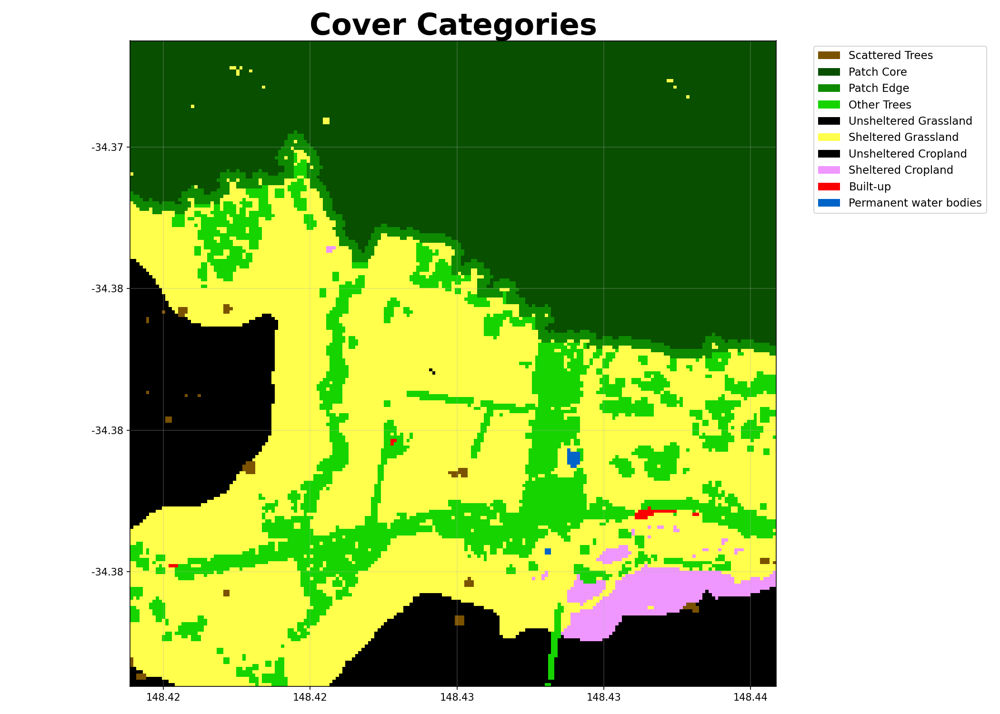
Buffer Categories¶
- shelterbelts.indices.buffer_categories.buffer_categories(cover_data, gullies_data, ridges_data=None, roads_data=None, outdir='.', stub='TEST', buffer_width=3, savetif=True, plot=True)¶
Reclassify relevant corridors as riparian buffers and ridge buffers.
- Parameters:
cover_data (str, xarray.Dataset, or xarray.DataArray) – Integer tif file generated by cover_categories.py.
gullies_data (str, xarray.Dataset, or xarray.DataArray) – Boolean tif file generated by either hydrolines.py or catchments.py.
ridges_data (str, xarray.Dataset, or xarray.DataArray, optional) – Boolean tif file generated by catchments.py.
roads_data (str, xarray.Dataset, or xarray.DataArray, optional) – Boolean tif file generated by osm.py or hydrolines.py.
outdir (str, optional) – Output directory for saving results. Default is current directory.
stub (str, optional) – Prefix for output filenames. Default is ‘TEST’.
buffer_width (int, optional) – Number of pixels away from the feature that still counts as within the buffer. Default is 3.
savetif (bool, optional) – Whether to save the results as a GeoTIFF. Default is True.
plot (bool, optional) – Whether to generate a PNG visualisation. Default is True.
- Returns:
Dataset with ‘buffer_categories’ band, where integers represent categories defined in ‘buffer_categories_labels’.
- Return type:
xarray.Dataset
Notes
When savetif=True, it outputs a GeoTIFF file with embedded color map:
{stub}_buffer_categories.tifWhen plot=True, it outputs a PNG visualisation with legend:
{stub}_buffer_categories.pngExamples
Using file paths as input:
>>> from shelterbelts.utils.filepaths import get_filename >>> cover_file = get_filename('g2_26729_cover_categories.tif') >>> gullies_file = get_filename('g2_26729_DEM-S_gullies.tif') >>> ds = buffer_categories(cover_file, gullies_file, outdir='/tmp', plot=False, savetif=False) >>> 'buffer_categories' in set(ds.data_vars) True
Using Datasets as input:
>>> import rioxarray as rxr >>> da_cover = rxr.open_rasterio(cover_file).squeeze('band').drop_vars('band') >>> ds_cover = da_cover.to_dataset(name='cover_categories') >>> da_gullies = rxr.open_rasterio(gullies_file).squeeze('band').drop_vars('band') >>> ds_gullies = da_gullies.to_dataset(name='gullies') >>> ds = buffer_categories(ds_cover, ds_gullies, outdir='/tmp', plot=False, savetif=False) >>> 'buffer_categories' in set(ds.data_vars) True
Here’s how different parameters affect the buffer categorization:
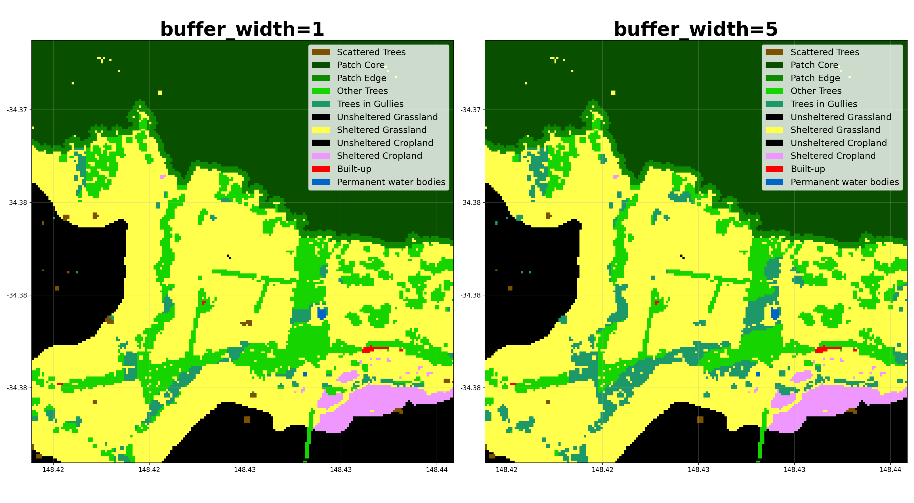
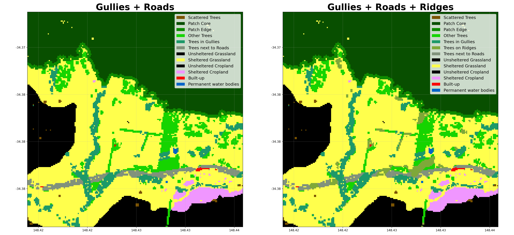
Shelter Metrics¶
Patch Metrics¶
- shelterbelts.indices.shelter_metrics.patch_metrics(buffer_data, outdir='.', stub='TEST', plot=True, save_csv=True, save_tif=True, save_labels=True, min_shelterbelt_length=15, max_shelterbelt_width=6, min_patch_size=20, crop_pixels=None)¶
Calculate patch metrics and cleanup the tree pixel categories.
- Parameters:
buffer_data (str, xarray.Dataset, or xarray.DataArray) – Integer tif file generated by buffer_categories.py.
outdir (str, optional) – Output directory for saving results. Default is ‘.’.
stub (str, optional) – Prefix for output filenames. Default is ‘TEST’.
plot (bool, optional) – Whether to generate a PNG visualisation. Default is True.
save_csv (bool, optional) – Whether to save patch_metrics.csv with cluster statistics. Default is True.
save_tif (bool, optional) – Whether to save linear_categories.tif output. Default is True.
save_labels (bool, optional) – Whether to save label-related tif files (assigned_labels, ellipse_outline_raster, shortest_path_raster, perpendicular_raster, widths_raster). Default is True.
min_shelterbelt_length (int, optional) – Minimum skeleton length (in pixels) to classify a cluster as linear. Default is 15.
max_shelterbelt_width (int, optional) – Maximum skeleton width (in pixels) to classify a cluster as linear. Default is 6.
min_patch_size (int, optional) – Clusters smaller than this are merged into nearby larger clusters. Default is 20.
crop_pixels (int, optional) – Number of pixels to crop from each edge of the output. Default is None (no cropping).
- Returns:
ds (xarray.DataSet) – with linear_categories and labelled_categories.
df (pandas.DataFrame) – Individual attributes for each cluster.
Notes
Downloads the following files (depending on parameters):
patch_metrics.csv: Cluster statistics for each patch
linear_categories.tif: Reclassified categories (linear=18, non-linear=19) after majority filtering (dtype uint8)
linear_categories.png: Visualisation with legend
assigned_labels.tif: Unique integer ID for each cluster (dtype int32)
ellipse_outline_raster.tif: Ellipse boundary for each cluster
shortest_path_raster.tif: Skeleton path along each cluster
perpendicular_raster.tif: Perpendicular width measurements
widths_raster.tif: Width values at each skeleton pixel
labelled_categories.tif: Unique integer ID for each cluster (dtype int32); view in QGIS with Paletted/Unique Values
labelled_categories.png: Cluster IDs with ellipse overlays
Examples
Using file paths as input:
>>> from shelterbelts.utils.filepaths import get_filename >>> buffer_file = get_filename('g2_26729_buffer_categories.tif') >>> ds, df = patch_metrics(buffer_file, outdir='/tmp', stub='test', plot=False, save_csv=False, save_tif=False) >>> 'linear_categories' in set(ds.data_vars) True
Using Datasets as input:
>>> import rioxarray as rxr >>> da = rxr.open_rasterio(buffer_file).squeeze('band').drop_vars('band') >>> ds_buffer = da.to_dataset(name='buffer_categories') >>> ds, df = patch_metrics(ds_buffer, outdir='/tmp', stub='test', plot=False, save_csv=False, save_tif=False) >>> 'linear_categories' in set(ds.data_vars) True
Class Metrics¶
- shelterbelts.indices.shelter_metrics.class_metrics(buffer_data, outdir='.', stub='TEST', save_excel=True)¶
Calculate the percentage cover in each class.
- Parameters:
buffer_data (str, xarray.Dataset, or xarray.DataArray) – A tif file, Dataset, or DataArray where the integers represent the categories defined in ‘linear_categories_labels’.
outdir (str, optional) – The output directory to save results. Default is ‘.’.
stub (str, optional) – Prefix for output file names. Default is ‘TEST’.
save_excel (bool, optional) – Whether to save the results as an Excel file with multiple sheets. Default is True.
- Returns:
A dictionary with the following pandas DataFrames:
Overall: Count and percentage for each category
Landcover: Aggregated statistics by landcover group (Trees, Grassland, Cropland, Built-up, Water)
Trees: Breakdown of tree categories as percentage of total tree coverage
Shelter: Percentage of grassland and cropland that are sheltered vs unsheltered
- Return type:
dict
Examples
Using file paths as input:
>>> from shelterbelts.utils.filepaths import get_filename >>> linear_file = get_filename('g2_26729_linear_categories.tif') >>> dfs = class_metrics(linear_file, outdir='/tmp', stub='test', save_excel=False) >>> len(dfs) == 4 True
Using linear categories from a Dataset:
>>> import rioxarray as rxr >>> da = rxr.open_rasterio(linear_file).squeeze('band').drop_vars('band') >>> ds_linear = da.to_dataset(name='linear_categories') >>> dfs = class_metrics(ds_linear, outdir='/tmp', stub='test', save_excel=False) >>> 'Shelter' in dfs True
Downloads¶
class_metrics.xlsx: An excel file with each dataframe in a separate tab.
Full Indices Pipeline¶
Run the end-to-end indices pipeline on a single, or multiple percent-cover rasters.
- shelterbelts.indices.all_indices.indices_tif(percent_tif, outdir='outdir', tmpdir='tmp', stub=None, wind_method=None, wind_threshold=20, cover_threshold=1, min_patch_size=20, edge_size=3, max_gap_size=1, distance_threshold=20, density_threshold=5, buffer_width=3, strict_core_area=True, crop_pixels=0, min_core_size=1000, min_shelterbelt_length=15, max_shelterbelt_width=6, debug=False)¶
Run the complete indices pipeline for a single percent-cover GeoTIFF.
- Parameters:
percent_tif (str) – Path to the input percent-cover GeoTIFF (one-band, percent tree cover).
outdir (str, optional) – Output directory for saving results (default is in utils.filepaths).
tmpdir (str, optional) – Directory for temporary files (default is in utils.filepaths).
stub (str, optional) – Prefix for output filenames. If not provided it is derived from
percent_tif.wind_method (str or None, optional) – Method used to infer shelter direction. Can be
None,'WINDWARD','MOST_COMMON','MAX','HAPPENED'or'ANY'. Seeshelter_categories()for details.wind_threshold (int, optional) – Wind speed threshold in km/h. Default 20.
cover_threshold (int, optional) – Pixel percent cover threshold to treat a pixel as ‘tree’. Default 1. - If input is a binary tif use
cover_threshold=1. - For percent-cover tifs typical values are 10 or 20. - For confidence tifs a value like 50 is reasonable.min_patch_size (int, optional) – Minimum area (pixels) to classify as a patch rather than scattered trees. Default is 20.
edge_size (int, optional) – Distance (pixels) defining the edge region around patch cores. Default is 3.
max_gap_size (int, optional) – Maximum gap (pixels) to bridge when connecting tree clusters. Default is 1.
distance_threshold (int, optional) – Distance from trees that counts as sheltered. Units are either ‘tree heights’ or ‘number of pixels’, depending on if a height_tif is provided. Default is 20.
density_threshold (int, optional) – Percentage tree cover within the
distance_thresholdthat counts as sheltered. Only applies if thewind_datais not provided. Default is 5.buffer_width (int, optional) – Number of pixels away from the feature that still counts as within the buffer. Default is 3.
strict_core_area (bool, optional) – If True, enforce that core areas exceed the edge_size at all points. If False, use dilation and erosion to allow some irregularity. Default is True.
crop_pixels (int, optional) – Number of pixels to crop from each edge of the output. Default is 0.
min_core_size (int, optional) – Minimum area (pixels) to classify as a core area. Default is 1000.
min_shelterbelt_length (int, optional) – Minimum skeleton length (in pixels) to classify a cluster as linear. Default is 15.
max_shelterbelt_width (int, optional) – Maximum skeleton width (in pixels) to classify a cluster as linear. Default is 6.
debug (bool, optional) – If True, intermediate TIFFs/plots are saved for debugging. Default False.
- Returns:
ds (xarray.Dataset) – Dataset with
linear_categoriesandlabelled_categoriesbands.df (pandas.DataFrame) – Per-cluster patch metrics (skeleton length/width, category, etc.).
- shelterbelts.indices.all_indices.indices_csv(csv, outdir='outdir', tmpdir='tmp', stub=None, wind_method=None, wind_threshold=20, cover_threshold=1, min_patch_size=20, edge_size=3, max_gap_size=1, distance_threshold=20, density_threshold=5, buffer_width=3, strict_core_area=True, crop_pixels=0, min_core_size=1000, min_shelterbelt_length=15, max_shelterbelt_width=6)¶
Run the indices pipeline for every file listed in a CSV.
The CSV is expected to contain a column named
filenamewith full paths to percent-cover GeoTIFFs. Each row is processed sequentially by indices_tif using the provided parameters.- Parameters:
csv (str) – Path to a CSV file containing a filename column with input TIFF paths.
parameters (Other) – Passed through to
indices_tif()(see that function for details).
- shelterbelts.indices.all_indices.indices_tifs(folder, outdir='outdir', tmpdir='tmp', param_stub='', wind_method=None, wind_threshold=20, cover_threshold=1, min_patch_size=20, edge_size=3, max_gap_size=1, distance_threshold=20, density_threshold=5, buffer_width=3, strict_core_area=True, crop_pixels=0, limit=None, tiles_per_csv=100, min_core_size=1000, min_shelterbelt_length=15, max_shelterbelt_width=6, suffix='tif')¶
Run the indices pipeline over a folder of binary or integer tifs representing percentage tree cover.
- Parameters:
folder (str) – Input directory containing binary or integer TIFFs.
outdir (str, optional) – Output directory for generated linear/category TIFFs.
tmpdir (str, optional) – Directory used for temporary CSVs and intermediate files.
param_stub (str, optional) – Extra stub for csv filenames and downstream tifs.
tiles_per_csv (int, optional) – Number of tiles grouped per subprocess CSV. Default is 100.
parameters (Other) – Passed through to
indices_tif()(see that function for details).
Catchments¶
- shelterbelts.indices.catchments.catchments(terrain_tif, outdir='.', stub='TEST', tmpdir='.', num_catchments=10, savetif=True, plot=True)¶
Generate gully and ridge tifs from a digital elevation model.
- Parameters:
terrain_tif (str) – Path to the DEM (Digital Elevation Model) GeoTIFF file.
outdir (str, optional) – Output directory for saving results. Default is current directory.
stub (str, optional) – Prefix for output filenames. Default is “TEST”.
tmpdir (str, optional) – Temporary folder to save the terrain_tif as float64 for pysheds. Default is current directory.
num_catchments (int, optional) – The number of catchments to find when assigning gullies and ridges. Default is 10.
savetif (bool, optional) – Whether to save the results as a GeoTIFF. Default is True.
plot (bool, optional) – Whether to generate a PNG visualisation. Default is True.
- Returns:
Dataset containing:
terrain: The input DEM (float)
gullies: Boolean array of gullies
ridges: Boolean array of catchment boundaries
- Return type:
xarray.Dataset
Notes
When
savetif=True, it writes:{stub}_gullies.tif{stub}_ridges.tif
When
plot=True, it writes:{stub}_gullies_and_ridges.png
Opportunities¶
- shelterbelts.indices.opportunities.opportunities(percent_tif, roads_data=None, gullies_data=None, ridges_data=None, worldcover_data=None, dem_data=None, outdir='.', stub=None, tmpdir='.', cover_threshold=1, width=1, ridges=False, num_catchments=10, min_branch_length=10, contour_spacing=10, min_contour_length=100, equal_area=False, savetif=True, plot=False, crop_pixels=0)¶
Suggest opportunities for new trees based on ridges, gullies and contours.
Loads a percent-cover GeoTIFF, derives gullies (from hydrolines or DEM catchments), roads, ridges and contours, then delegates to
opportunities_da()to classify grass/crop pixels near those features as planting opportunities.- Parameters:
percent_tif (str) – Path to a percent-cover GeoTIFF. A binary tif also works with the default
cover_thresholdof 1.roads_data (str or xarray.DataArray, optional) – Pre-loaded binary roads raster or path to a GeoTIFF. When None the roads are derived from the bounding box of
percent_tif.gullies_data (str or xarray.DataArray, optional) – Pre-loaded binary gullies raster or path to a GeoTIFF. When None the gullies are derived from hydrolines or DEM catchments.
ridges_data (str or xarray.DataArray, optional) – Pre-loaded binary ridges raster or path to a GeoTIFF. When None and
ridges=True, ridges are derived from DEM catchments.worldcover_data (str or xarray.DataArray, optional) – Pre-loaded WorldCover land-cover raster or path to a GeoTIFF. When None the WorldCover data is derived from the bounding box.
dem_data (str or xarray.DataArray, optional) – Pre-loaded DEM raster or path to a GeoTIFF. When None the DEM is derived from the bounding box.
outdir (str, optional) – Output directory for saving results. Default is current directory.
stub (str, optional) – Prefix for output filenames. If not provided it is derived from
percent_tif.tmpdir (str, optional) – Directory for temporary files. Default is current directory.
cover_threshold (int, optional) – Pixel percent cover threshold to treat a pixel as ‘tree’. Default is 1.
width (int, optional) – Number of pixels away from the feature that still counts as within the buffer. Default is 1.
ridges (bool, optional) – Whether to include opportunities for trees on catchment boundaries (ridges). If False, hydrolines are used for gullies only. If True, the DEM is used for both gullies and ridges. Default is False.
num_catchments (int, optional) – Number of catchments when calculating ridges and gullies. If None, the number of hydroline segments is used instead. Default is 10.
min_branch_length (int, optional) – Smallest allowable branch when using hydrolines to determine number of catchments. Default is 10.
contour_spacing (int, optional) – Number of pixels between each contour. If
equal_areais True, this is used as the number of contours instead. Set to 0 to disable contour opportunities. Default is 10.min_contour_length (int, optional) – Smallest allowable contour to use as an opportunity for planting trees. Default is 100.
equal_area (bool, optional) – Whether to generate a given number of contours per tile (True), or place contours at the same elevations across all tiles (False). Default is False.
savetif (bool, optional) – Whether to save the results as a GeoTIFF. Default is True.
plot (bool, optional) – Whether to generate a visualisation. Default is False.
crop_pixels (int, optional) – Number of pixels to crop from each edge of the output. Default is 0.
- Returns:
Dataset containing:
woody_veg: Original binary tree/no-tree classification
opportunities: Opportunity categories (values 0, 5, 6, 7, 8)
- Return type:
xarray.Dataset
Notes
When savetif=True, it outputs a GeoTIFF file with embedded color map:
{stub}_opportunities.tifExamples
Using file paths as input:
>>> from shelterbelts.utils.filepaths import get_filename >>> tree_file = get_filename('g2_26729_binary_tree_cover_10m.tiff') >>> roads_file = get_filename('g2_26729_roads.tif') >>> gullies_file = get_filename('g2_26729_hydrolines.tif') >>> dem_file = get_filename('g2_26729_DEM-H.tif') >>> worldcover_file = get_filename('g2_26729_worldcover.tif') >>> ds = opportunities(tree_file, roads_data=roads_file, gullies_data=gullies_file, dem_data=dem_file, worldcover_data=worldcover_file, outdir='/tmp', plot=False, savetif=False) >>> set(ds.data_vars) == {'woody_veg', 'opportunities'} True
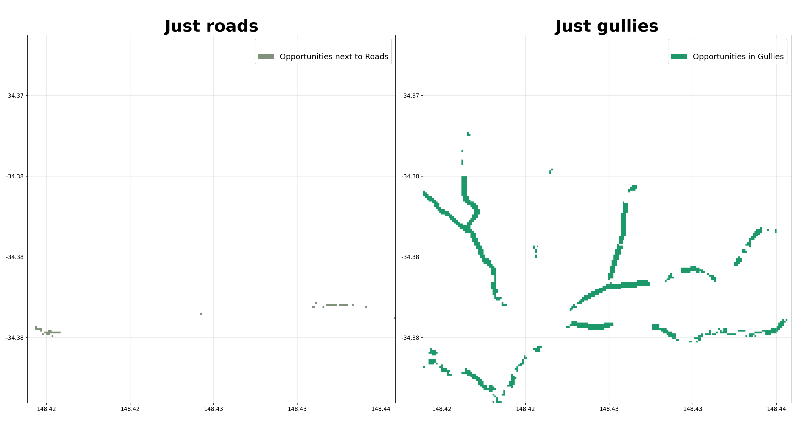
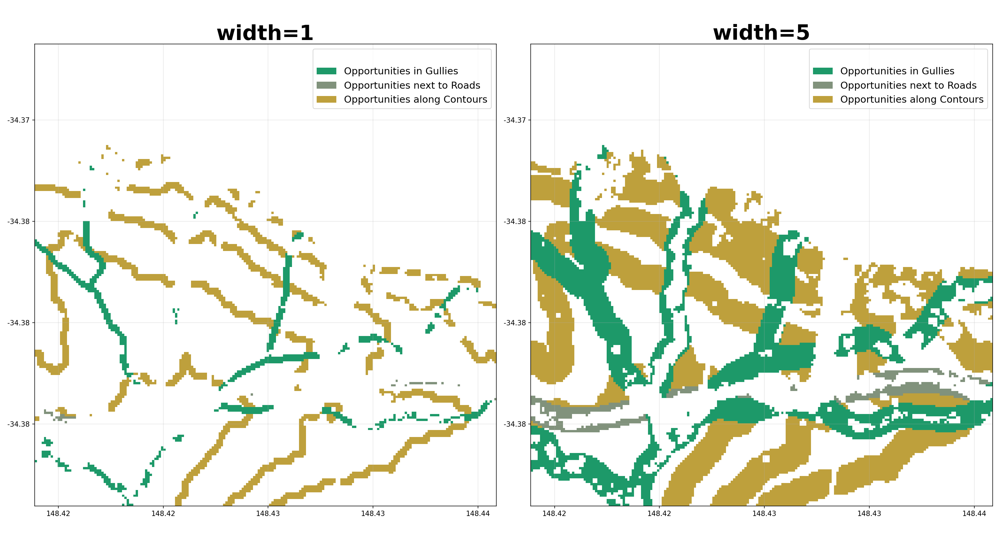
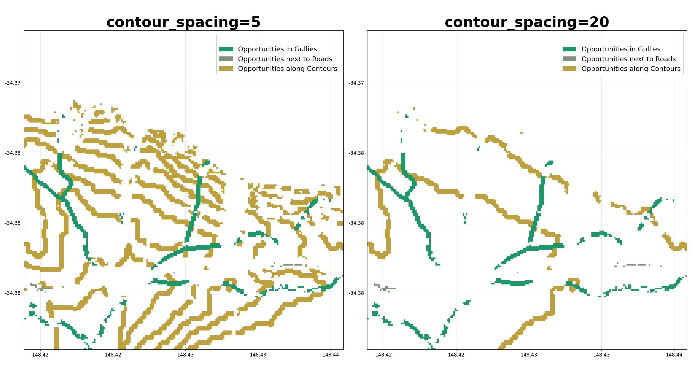